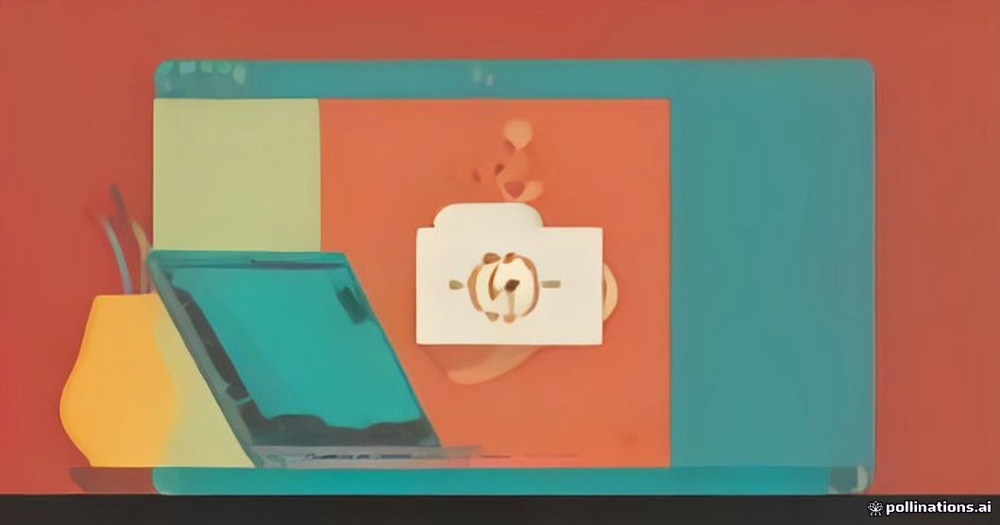

De l'idée à la première vente : le stack IA et freemium pour monétiser son expertise
2026-11-15 · Lancez votre activité freelance ou vos produits numériques sans budget grâce à un workflow basé sur des outils IA freemium simples et efficaces.

Freelances et créateurs : concevoir et lancer un projet complet grâce au workflow IA et Freemium
2026-11-15 · Apprenez à structurer votre workflow de production et de vente sans budget grâce aux meilleurs outils IA et logicels freemium pour freelances et créateurs.

Créateurs et freelances : comment automatiser son quotidien sans se ruiner (Guide Freemium & IA)
2026-11-15 · Découvrez comment optimiser votre temps avec les meilleurs outils freemium et l'IA. Un guide pratique et honnête pour freelances, étudiants et créateurs.

Travailler plus vite sans payer : bâtir son espace de travail IA 100 % gratuit
2026-11-15 · Marre d'accumuler les abonnements ? Découvrez comment structurer une routine de travail ultra-productive grâce aux meilleurs outils IA gratuits.

10 outils d’intelligence artificielle gratuits ou freemium pour gagner du temps
2026-11-15 · Découvrez 10 IA gratuites ou freemium qui boostent la productivité des freelances, étudiants et créateurs de contenu francophones.